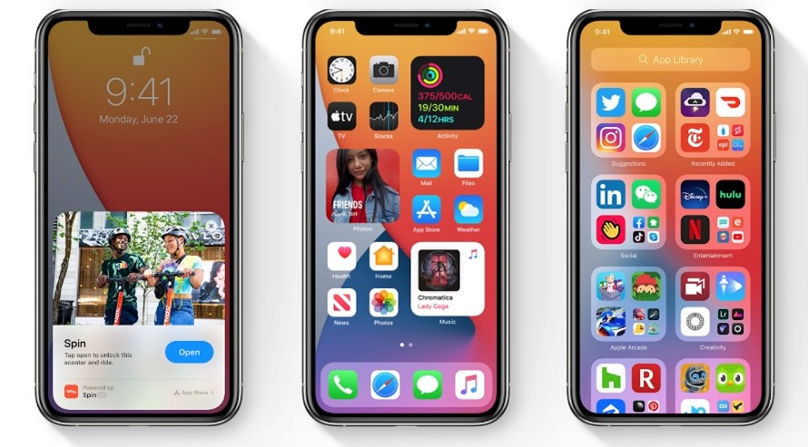
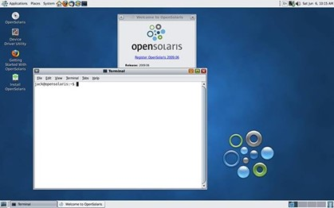

Contoh Sistem Operasi
- (IPhone OS)

Kelebihan:
- UI yang Sederhana
- Keamanan Kuat
- Update OS Teratur
- Ekosistem Apple
- Apps Store Terjamin
Kekurangan:
- Keterbatasan Kustomisasi
- Harga Perangkat Tinggi
- Ekosistem Tertutup
- Kurangnya Slot Ekspansi Memori
- Batasan Transfer File
- Aplikasi Terkadang Berbayar
- Linux (Ubuntu)
Kelebihan:
- Gratis dan Open Source
- Keamanan Baik
- Performa Stabil dan Efisien
- Update Teratur
- Komunitas Besar
Kekurangan:
- Tidak Sepopuler Seperti Windows dan MacOS
- Keterbatasan Aplikasi Komersial
- Dukungan Gaming Terbatas
- Kurangnya Dukungan Teknis Resmi
- Unix

Kelebihan:
- Stabil dan Handal
- Keamanan yang Kuat
- Multiuser dan Multitasking
- Portabilitas Tinggi
- File Sistem yang Efisien
- Dukungan untuk Pemrograman
- Open Source dan Varian Beragam
Kekurangan:
- Kustomisasi yang Rumit
- Biaya Lisensi Untuk Beberapa Varian
- Tidak Ramah Pengguna Biasa
- Keterbatasan Dukungan Aplikasi Komersial
- Kompatibilitas Perangkat Keras
- Amiga
Kelebihan:
- Grafis dan Multimedia yang Canggih pada Zamannya
- Multitasking Preemptive
- Kualitas Audio yang Unggul
- Fleksibilitas dalam Penggunaan Perangkat Lunak
- Ekosistem Game yang Kuat
- Antarmuka Grafis yang Bersih dan Mudah Digunakan
- Komunitas dan Pengembangan Open Source
Kekurangan:
- Kurangnya Dukungan Perangkat Keras Modern
- Pasar yang Terbatas
- Keterbatasan Pengembangan Perangkat Lunak
- Tidak Ada Dukungan Multiplatform
- Manajemen Memori yang Terbatas
- Kompetisi yang Meningkat
- Kegagalan Manajemen Perusahaan